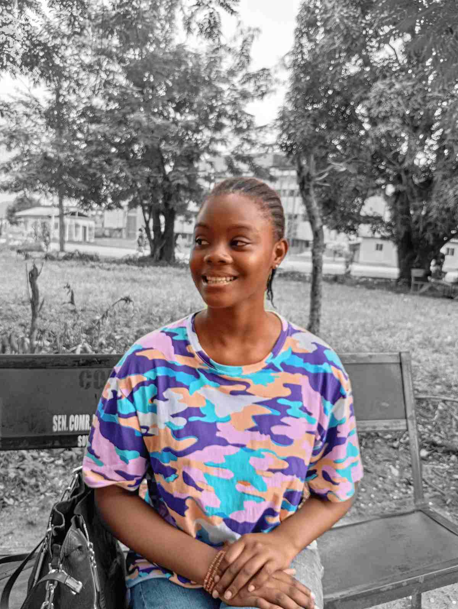

Home
About Me
Annalucia Awa is a passionate and detail-oriented student of Web and Computer Programming, known for her creativity, dedication, and growing expertise in front-end web development. She has developed a strong foundation in HTML, CSS, and JavaScript, using these skills to create responsive and accessible websites that balance visual design with functionality. Through projects like her vacay planner website, product review form, and interactive course display, Annalucia has demonstrated a clear understanding of modern web design principles and user experience. She approaches every project with focus, patience, and curiosity, continuously refining her craft and exploring new ways to make digital experiences both beautiful and meaningful. With a natural eye for design and a problem-solver's mindset, Annalucia is steadily building her path toward becoming a skilled front-end developer who blends creativity, usability, and technology in everything she creates.
Student Photo
Web Certificate Courses
Total Credits of course listed above is: